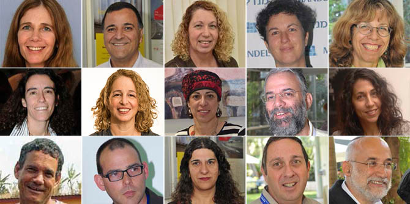

As part of the Mandel Graduate Unit’s continuation programs, the graduates of Cohort 9 of the Mandel School for Educational Leadership reconvened 15 years after completing their studies.
The event which took place on May 18-19 2017 began with a lecture by Prof. Ariel Hirschfeld on the subject of “Individuals and Community,” which led to a discussion involving questions about choice, sacrifice, and authoritarian leadership as opposed to forms of leadership that mediate reality but allow individuals to make their own decisions. The session included study of Almog Behar’s poem “Until He Was Three I Didn’t Tell My Son About God.”
Next, the group held an internal, retrospective session designed to provide them with professional guidance. Each graduate presented a professional challenge they face, and the other group members analyzed the case based on their familiarity with the graduate from their time together at the Mandel School for Educational Leadership. The exercise provided a unique perspective that allowed each graduate to review their actions with the perspective of time.
Prof. Moshe Halbertal offered a unique reading of the Biblical story of King David and Batsheva, and presented an analysis showing how the detachment of the leader, King David, from his people and his disconnect from the military during a time of war, led him to lose his way and eventually his power.
The event concluded with another closed session in which the graduates explored the question “Where Am I Headed?” This session gave the graduates an opportunity to present their visions for their professional futures to each other.

{kind=link}